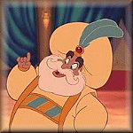

Forums galactiques > Assemblée Galactique : diplomatie officielle > Présentations
Pages : 1 2 ... 5 6 7 ... 31 32
| Sigismund Respect diplomatique : 13  06/06 ETU 17:27 | Score : 9 Détails Une inquiétante pénombre s' installa alors qu' un homme d' apparence très puissante apparut dans la salle de l' assemblée. Il parraissait faire aisément deux mètres de haut et portait une imposante armure energétique noire avec des épaulettes blanches.De son ceinturon pendaient une incroyablement belle épée énergétique ainsi qu' un bolter-fuseur.Son armure était finement travaillée et des sceaux de pureté bénicaient son porteur en de nombreux endroits.Enfin, une cape d' un rouge sombre recouvrait ses épaules.
lorsqu' il prit la parole, le silence régna. " Salutation nobles commandants, je me présente ;Sigismund, premier grand sénéchal de la légion des Black Templars.Vous ne me connaissez pas encore mais vous saurez me craindre a l' avenir. Je vais changer la face du monde et régnerai en maître sur cette misérable galaxie. Je controlerai chacun de mes vassaux d' une poigne de fer. Nuls de dictent mes actions et je n' obéirai qu' à la volonté de moi-même" Il dévisagea d' un regard glacé chaque membre de l' assemblé "Vous connaissez maintenant clairement mes intentions, et je demande à tous ceux voulant me rejoindre de le faire rapidement. Mon empire est encore faible mais vous apprendrez bientot à me redouter." Sur ce il s' assit dans le silence le plus complet. | ||
| Sultan Ahmet Respect diplomatique : 10  06/06 ETU 21:06 | Score : 10 Détails *Les diplomates menaient un débat houleux sur la politique intersystèmique quand tout à coup, un bruit de musique se fit entendre. Les diplomates intrigués se turent alors que le son de la musique amplifiait.
Les portes de la salle s'ouvrirent c'est alors que tout le monde vit entrer dans la salle une trentaine de danseuses habillés dans des tissus de soie transparente et au ventre découvert, elles dansaient une danse envoutante qu'aucun magistrat n'avait vus jusqu'alors. Les danseuse étaient suivies d'un orchestre presque aussi grand que la troupe des danseuses, leurs instruments étaient peu familier et leur musique etait aussi mysterieuse que la danse qu'elle accompagnait. ces musiciens etaient suivis à leur tour d'une cinquantaine de soldats en costume d'apparat. Ils entouraient un grand trone porté par 4 esclaves,et sur lequel etait assis un grand homme enrobé avec une moustache et une barbe blanche, autour de lui 2 femmes etaient étendues lassivement dans des robes qui laissaient entrevoir une bonne partie de leurs jambes. Une fois la procession arretée le petit homme descendit de son trone et s'avançat jusqu'à l'estrade et s'exprimat ainsi:* "Bonjour à vous tous commandants de cette galaxie, je suis ici pour me présenter à vous. Je suis le Sultan Ahmet El Fatih dirigeant des 12 terres. Je viens ici pour trouver des alliés mais aussi des ennemis. Mon peuple n'aime pas les massacres inutiles, mais comme tout les peuples, si l'on veut survivre, il nous faut être puissant, donc si nous vous attaquons, ne nous en voulez pas trop, nous ne ferons qu'aller vers notre destin. *Il sourit* je ne suis cependant pas ici dans le but de devenir le chef de notre galaxie, ni de guérir par la parole tout les maux de celle ci, donc nevous inquietez pas de moi diplomates acharnés, je ne suis pas la pour prendre votre place, du moins pas pour l'instant..." *Pendant qu'il disait cette dernière phrase , il fit un mouvement avec sa main et la procession repartie vers la porte et tandis que la porte se refermait sur les soldats du sultan, les débats reprirent avec leur ferveur habituelle.* | ||
| athéna Respect diplomatique : 97  07/06 ETU 23:12 | Score : 3 Détails Alors qu'elle était enceinte d'Athéna, la déesse Métis fut avalé par Zeus, son amant, qui craignait que l'enfant qu'elle portait ne le détrônât. Mais le dieu sentit bientôt des douleurs d'un violent mal de tête. Héphaïstos lui fendit le crâne d'un coup de hache. Athéna sortit de la déchirure de sa tempe, tout armée et casquée, en poussant un immense cri de guerre. La déesse, l'une des douze divinités de l'Olympe, devait être mêlée, de près ou de loin, à la plupart des récits cosmogoniques. Douée d'une noble raison, ayant acquis de sa mère le sens de la sagesse, elle devint, en effet, pour les Dieux, une précieuse conseillère et les aida, en particulier, à vaincre les Géants. Cependant, elle n'hésita pas à se disputer à Poséidon la possession de l'Attique. Tandis que le dieu frappait l'Acropole de son trident et en faisait jaillir un splendide coursier ou, disent d'autres versions, un lac salé, la déesse offrait aux habitants du pays un olivier, symbole de la paix et aussi de la richesse. Ces derniers jugèrent que l'arbre leur serait plus utile que le cheval et choisirent finalement Athéna pour protectrice. On verra la déesse protéger sans relâche les grands héros de l'Attique et la plupart des chefs grecs au cours de la guerre de Troie.
Bientôt, les attributions d'Athéna se développèrent et se multiplièrent. Elle ne fut pas seulement la chaste déesse qui priva Tirésias de la vue parce que le devin avait osé la regarder se baigner, ou qui fit chasser de l'Olympe Héphaïstos, coupable d'avoir attenté à son honneur ; elle ne fut plus uniquement la déesse de la Guerre portant la cuirasse, l'égide, la lance d'or, le bouclier, où surgissait la tête de Méduse, telle, en somme, que la présentait le Palladion : elle devint la protectrice de l'Etat, la déesse qui garantit l'équité des lois, leur juste application, tant devant les tribunaux que dans les assemblées. Mais la loi seule ne peut suffire à assurer la pérennité d'un Etat et d'un peuple elle doit également provenir de la prospérité du pays. Aussi Athéna veille, avec une particulière bienveillance, sur l'agriculture. Elle a inventé, pour la commodité des hommes, les instruments aratoires, qui permirent à le terre attique de fournir un meilleur rendement. En outre, la déesse protège chaque famille, veille sur l'entente et la chasteté des époux, sur l'honneur du foyer et la santé de quiconque ("Athéna Hygieia"). Par l'influence heureuse de sa raison et de sa pensée réfléchie et subtile, Athéna apporte aux lettres et aux arts l'énergie et l'inspiration nécessaires à un rayonnement spirituel étendu et constant. Il s'ensuit que cette divinité apparaît bien comme le symbole divin de la civilisation grecque qui, par sa force guerrière, par son intelligence, sa sagesse, la modération de ses moeurs et la beauté étudiée de ses monuments artistiques et littéraires, a su imposer sa domination sur le monde. Plus tard, les Romains l'ont identifiée avec Minerve. | ||
| settra Respect diplomatique : 12  08/06 ETU 00:11 | Score : -3 Détails sry
| ||
| athéna Respect diplomatique : 97 08/06 ETU 00:14 | Score : 3 Détails archive datant de l'ère pré-éxode de la terre.
un inconnu: Si je vous ai réunis ce soir, devant ces caméras de télévision, après avoir invité la presse, c'est parce que, vous l'aurez compris, j'ai une déclaration essentielle à vous faire. Oui, je crois sincèrement qu'elle vous paraîtra importante, c'est pourquoi je vous demande d'écouter ce long monologue. En effet, vous découvrirez alors par qui vous êtes gouvernés. Mesdames et messieurs les journalistes, vous aurez de quoi remplir les pages de vos journaux demain. Je vais vous raconter une histoire qui date de quarante ans, lorsque j'étais encore un jeune homme d'une vingtaine d'années. J'étais un être simple, banal. Ordinaire, pourrait-on dire. Ni grand, ni petit, plutôt mince. Je n'étais pas spécialement beau, mais cela m'importait peu. Les cheveux châtains, coupés courts, les yeux vert foncé, rien de bien exceptionnel. Une seul chose pouvait me différencier de tous ces gens dans la rue : cet air rêveur qui ne me quittait jamais. J'étais un utopiste et je laissais aller mon imagination, qui m'entraînait dans mes rêves le plus souvent chimériques. Ma seule ambition était de trouver l'Amour, que je voulais parfait et que je croyais infaillible. Comme cela devait être doux de regarder l'être aimé, le savoir près de soi ! Je l'attendais ardemment, et me tromper était presque la seule chose que je craignais. J'aimais me promener, seul, dans les rues de Paris. Ma ville. J'appréciais la beauté de son architecture, son atmosphère, ses bruits, constamment différents, et surtout, cette sensation qu'il restera toujours quelque chose à explorer. Je passais mes journées à me perdre dans ses rues, entrer dans ses boutiques, ses expositions. C'est ainsi, qu'un après-midi de juin, après plusieurs heures d'errance dans l'infini labyrinthe de Paris, je décidai finalement d'aller faire une de mes innombrables visites au musée du Louvre. J'aimais ce lieu où toutes sortes de gens se mélangeaient. Contrairement à mon habitude, je suivis la visite guidée. J'étais passionné par l'art, collectionneur de surcroît. Lorsque je ne faisais pas mes promenades sans fin, je partageais mon temps entre la Sorbonne et le fouillis incroyable que constituait ma petite chambre d'étudiant. Il y avait là de tout. Une quantité incalculable de livres, achetés pour la plupart d'occasion, sur des brocantes. Des objets d'arts, qui dataient souvent de l'Antiquité. Et puis une infinité de choses non rangées, qui jonchaient le sol de la pièce. Je me plaisais à vivre dans ce capharnaüm inconcevable dans lequel je me retrouvais fort bien. Je marchais, aux côtés du guide, que j'écoutais d'une oreille distraite. Il m'expliquait certainement l'histoire de quelque objet ancien. Je n'écoutais qu'à moitié, préférant regarder toutes ces personnes autour de moi. Cette masse grouillante de touristes étrangers, de provinciaux en vacances, de retraités, s'émerveillant de chaque objet, d'enfants se poursuivant dans les couloirs inépuisables du Palais du Louvre, qui avaient tous décidé d'occuper leur après-midi dans le musée, pour découvrir les richesses intarissables des âges qui nous avaient précédés. Le bruit des cris, des conversations, le martèlement des pas de mon guide, sa voix. Etrange ce qu'on peut ressentir dans un simple musée lorsqu'on écoute ! Tous ces sons auxquels on ne prête généralement pas attention. Les gens marchaient, parlaient, sans se douter que c'était eux que je regardais, que j'entendais, au lieu d'écouter le bruit de fond créé par le soliloque du commentateur. A la fin de la visite, mon guide, qui avait certainement remarqué mon intérêt pour les statuettes antiques, me proposa de venir le trouver, à l'heure de la fermeture du musée, afin de me montrer certaines salles habituellement interdites au public qui pourraient, disait-il, m'intéresser. Bien évidemment, j'acceptais. Il me dit être un grand collectionneur d'œuvres de toutes sortes mais surtout de l'Antiquité. Nous parlâmes donc d'art, une des passions, comme je vous l'ai dit, qui me tenait le plus à cœur. Nous nous découvrîmes un certain nombre de points communs, et je me sentis de plus en plus proche de lui. Nos goûts, nos idées faisaient de nous deux personnes presque semblables. Il était comme une espèce de double de moi-même. Je m'aperçois aujourd'hui que si cet homme ne m'avait pas proposé de découvrir ces pièces inconnues et, d'après lui, d'une rareté incroyable, je ne serai pas là aujourd'hui pour vous faire cette déclaration qui va bouleverser ma vie. Nous nous séparâmes après avoir fixé notre rendez-vous. J'occupais la fin de mon après-midi à flâner dans les beaux quartiers. Les rues étaient envahies par les touristes. Des vendeurs de souvenirs étaient installés sur les trottoirs à chaque coin de rue. Le temps passait vite et il fut bientôt l'heure de retourner au musée. Nous devions nous retrouver devant une porte massive en bois joliment ciselé, que j'avais remarquée lors de ma première visite. Elle s'ouvrait, m'avait-il dit, sur des merveilles de l'art antique. A l'heure convenue, j'arrivais en ce lieu et, à ma grande surprise, la porte était ouverte. L'air était lourd, il faisait étonnamment chaud. Il n'y avait aucun son, si ce n'est le mouvement incessant des voitures dans la rue, toute proche. J'entendis du bruit dans la salle. Timidement, j'entrais, m'attendant à voir mon nouvel ami. Il n'y avait personne. C'est alors qu'après quelques pas, je la découvris. Elle était belle, sa chevelure de jais faisant luire sa peau d'albâtre. C'était une statue d'Athéna, assise sur son trône, magistrale. Son siège était finement décoré, la pierre dentelée. Il faisait ressortir la beauté de cette femme qui avait été sculptée, il y avait de cela des siècles. Un chef-d'œuvre de l'art grec, parfaitement conservée de l'Antiquité jusqu'à notre ère. Je me retournai, pour allumer la lumière, afin de mieux admirer cette merveilleuse représentation de la déesse guerrière. L'orage éclata, et avec lui un torrent d'eau, que j'entendais se déverser sur la cour intérieure du musée. Un rai de lumière inonda la pièce. Mais était-ce seulement les éclairs ? Je voulus revoir cette statue, alors seul sujet de mes préoccupations. Je lui fis face et je vis une femme. Belle, majestueuse. Elle s'était levée de son trône et me regardait. Elle se tenait, debout, semblant à la fois inanimée, et pourtant, étrangement vivante. Ses yeux vert émeraude, dans lesquels on semblait s'enfoncer, tant ils étaient profonds, me fixaient. Son regard m'effraya. C'était ce regard qui laissait paraître la vie en elle, cette vie qui l'envahissait peu à peu. Elle ouvrit la bouche comme pour parler. C'était le premier mouvement que je la voyais faire. Un mouvement qui ressemblait à celui d'un automate. Sa beauté me fascinait, me faisait presque peur. Elle parla effectivement : "Tu as peur, me dit-elle. Tu ne devrais pas. Je sais ce que tu penses. Une vulgaire statue ne devrait pas bouger, parler ainsi. Mais j'aime me réveiller, lorsqu'il y a quelque chose d'intéressant dans ce monde. J'aime l'orage et tu sembles valoir les quelques efforts que j'ai dû faire pour pouvoir te parler." Sa voix, comme ses mouvements, était mécanique. Lentement, elle détachait chaque mot, et lorsqu'elle parlait, son regard paraissait me transpercer et voir loin, à des kilomètres derrière moi. Ses yeux étaient vides, comme transparents, et pourtant, je m'enfonçais toujours dans la profondeur de sa pupille. Elle me dit qu'elle n'avait que peu de temps et me demanda de lui parler de moi. Je me présentai, puis lui racontai ma journée et mon étonnement de ne pas avoir trouvé le guide à notre rendez-vous. Elle resta silencieuse sur ce point. Nous discutâmes de ma vie, de mes passions… Et lorsque je parlais, je pouvais voir en elle, simplement en la regardant. Je découvrais son ennui, à vivre ici au milieu de tous ces objets inanimés, inconscients de leur possibilité de se mouvoir, sa joie, quand j'étais apparu dans la pièce, sa joie d'avoir enfin une visite, autre que celle du conservateur du musée, son désir de parcourir le monde. Je lui parlais de mes voyages, nombreux, de ma curiosité des autres cultures. Je voulais l'emmener avec moi, loin, dans d'autres pays, pour lui faire découvrir des contrées inconnues. Puis elle me raconta, toujours par son regard, les infinies légendes qui avaient été créées à son sujet. Sa naissance, originale, par le front de Zeus, les fonctions qui lui avaient été attribuées, déesse de la guerre, elle qui n'avait toujours espéré que l'amour et la paix entre les hommes… J'écoutais, ou plutôt je regardais tous ces mythes qui avaient été imaginés autour de cette femme magnifique et j'étais plongé dans ses pensées, comme si elles avaient été les miennes. C'est alors qu'il y eût un nouvel éclair, qui m'aveugla au point de me faire fermer rapidement les yeux. Quand je les rouvris, elle était inerte, sur son trône, comme au moment de mon entrée dans la salle. Plus aucune vie n'émanait d'elle. Je la fixais, éberlué. Que c'était-il donc passé ? J'attendais. Mais qu'attendais-je ? Que cette pauvre statue se réveille, de son sommeil de deux millénaires ? Je savais que ce à quoi je venais d'assister ne pouvait être réel, cependant, j'étais certain de ce que j'avais vu. Je me mis à chercher quelqu'un, mais je ne trouvais personne. Pas même mon guide. Je rentrai chez moi. Le lendemain, je décidai de retourner dans la salle. Evidemment, je ne vis pas mon guide, mais, cette fois encore, les portes étaient ouvertes. J'entrais dans la pièce. La statue était là, toujours au même endroit, mais, malgré mes recherches approfondies je ne trouvai aucun indice pouvant m'expliquer la situation de la veille. Je repris ma vie habituelle, mais je ne pouvais oublier cette soirée, et ce que j'avais vu ce soir là m'obnubilait. Je disais tout à l'heure que ma seule ambition était de trouver l'Amour, j'étais à présent certain de l'avoir connu, de le connaître encore. Oui, j'aimais cette statue, cette femme, et mes pensées ne pouvaient se détacher d'elle. Je regrettais de ne pouvoir la faire voyager, tel qu'elle l'aurait souhaité, et de ne pouvoir lui reparler, juste une fois encore. Je ne comprenais pas pourquoi on m'avait donné l'Amour pour me le reprendre aussitôt. Ma confiance en ce monde commença alors à disparaître peu à peu, ne croyant plus en un Amour nous unissant tous, je voulais faire le bien d'une autre manière. Je me dirigeais alors vers la politique. Je voulais d'un pays juste, respectant la solidarité et l'égalité, valeurs reconnues par la société grecque dans l'Antiquité, et par sa mythologie. Par mes fonctions, j'espérais instaurer l'Amour, ou du moins, le respect, afin de retrouver un peu cette sensation que m'avait procuré mon amour pour cette femme. Je suivis ensuite le parcours que vous connaissez, me menant à la présidence de ce pays. Je n'ai jamais revu le guide, comme s'il n'avait jamais existé. Je ne savais d'ailleurs où le trouver et j'ignorais jusqu'à son nom. Depuis ce jour, je vis en me demandant chaque minute si ce que j'ai vu est réel, m'interrogeant sur ma santé mentale. Etait-ce un rêve, cet homme qui me ressemblait tant qu'il aurait pu être tout droit sorti de mon imagination, dans mon espérance de trouver un ami qui me ressemblait ? Et cette femme ? Un autre rêve crée par mon désir de trouver l'Amour absolu ? Je ne parviens pas à y croire, et pourtant, je ne peux imaginer que tout ceci est réel. C'est pourquoi, aujourd'hui, ne sachant que faire, je vous ai révélé ce passé insoupçonné. J'ai pensé que c'était à vous qu'appartenait cette décision, vous mes électeurs, vous qui m'avez fait confiance. Je comprendrais que vous me croyiez fou, ce qui est peut-être vrai, et il serait logique que vous refusiez d'être gouvernés par un fou. Sur ce, je vous laisse décider ce que vous croyez le mieux pour vous tous. Nous sommes le 10 juillet 2001, il fait chaud, l'air est lourd. Paris somnole. Même les touristes sont peu nombreux, comme effrayés par ce climat inhabituel. M. Delay, le chef d'état déchu fait une visite au musée du Louvre. Il suit les couloirs et semble chercher quelque chose. Il s'arrête devant une porte en bois, regarde rapidement autour de lui. Personne n'a l'air de faire attention à lui. Il pousse la porte et entre dans la salle. Divers objets antiques, d'une grande beauté. Une statue d'une déesse grecque. Delay l'observe. Il attend. L'orage gronde. Un éclair traverse la pièce. Une voix douce lui murmura je vais te confier une mission.Te souvient tu de ce que je t'ai dit il y a 20 ans.Et bien répète le,clame le,crie le. De façon que chaque être vivant sur cette terre ou cette galaxie sachent qui est vraiment la déesse Athéna. C'est alors qu'il y eût un nouvel éclair, qui m'aveugla au point de me faire fermer rapidement les yeux. Quand je les rouvris, elle était inerte, sur son trône, comme au moment de mon entrée dans la salle. Plus aucune vie n'émanait d'elle. | ||
| Angelus L Oméga Respect diplomatique : 1305  08/06 ETU 13:29 | Score : 2 Détails [HRP :
http://www.ai.univ-paris8.fr/corpus/lurcat/dara/athena.htm http://www.vaucanson.org/lettres/travauxeleves/athena.html Veuillez enlever les points d'Athéna pour ce pur plagiat.] | ||
| Vecna Respect diplomatique : 423  08/06 ETU 13:35  | Score : -1 Détails athéna c'est pathétique !
vous auriez pût enlever paris , et en 2001 c'est si vieux que nous avons aucune archives dessus ! | ||
| Solon Respect diplomatique : 412  08/06 ETU 13:39 | Score : 1 Détails Vouloir du respect en prenant les paroles des autres est une chose totalement stupide et lâche. Si vous désirez être reconnu vous devez être l'auteur de vos messages. Une réputation ne se fait pas par copie des autres mais par affirmation de soi-même. Navrant...
| ||
| athéna Respect diplomatique : 97 08/06 ETU 14:29 | Score : 5 Détails je m'excuse mon acte est impardonnable.
j'espére que vous accepterez mes plus plates excuses. | ||
| Taliesin Respect diplomatique : 22  08/06 ETU 14:35 | Score : 2 Détails Acte à éviter à l'avenir, de toute évidence...
En espérant ne pas retrouver de telles activités dans d'autres sujets... La plagiat est hautement condamnable, mais on peut très bien s'inspirer d'un texte qui nous plait, sans pour autant le voler à son auteur... La citation est aussi une autre alternative. Elle évite de passer pour un imposteur. Retournons au vrai sujet de ce topic: les Présentations. | ||
| ezifiel Respect diplomatique : 19 10/06 ETU 11:02 | Score : 11 Détails Un homme de taille moyenne à la silhouette fine entre dans l'assemblée, son âge est indéfinissable il a des yeux d’un gris acier qui brillent d’une lueur moqueuse, il est doté d’une mâchoire puissante et d’un nez cassé sans doute du a un combat. Une large cicatrice part de sa joue gauche pour aller traverser une fine bouche figée dans un sourire ironique et finir sa course au niveau du menton. Ces cheveux, mi-court, sont d’un noir profond qui grisonnent aux tempes, il porte aussi des favoris qui encadrent son visage soulignant encore plus ça maigreur et son air décharné.
Ça tenue est négligée, il porte une chemise qui dans un lointain passé fut sans doute blanche, par dessus celle ci se trouve un long manteau noir. Une ceinture de cuir craquelé retient un pantalon large de couleur sombre s’arrêtant aux genoux pour donner place à des bottes de cuir noir couvertes de poussière. Il se déplace d’une démarche fluide la main gauche constamment posée sur un étui de pistolet accroché a sa ceinture. Il a tendance à parler ironiquement ce qui a la fâcheuse tendance a l’amener dans des situations épineuses. -Salutation noble assemblée, je me nomme Ezifiel, je suis nouveau en ces lieux et j'espère sincèrement que notre rencontre permettra de faire fructifier nos peuples respectifs... Je n'ai aucune ambition folle de domination totale mais je ne puis nier que j'ai quelques vices, j'aime l'argent, le pouvoir et les femmes *clin d'œil vers quelques commandantes dans l'assemblée*. Sachez aussi que toute attitude hostile envers mes forces sera combattue en premier par la diplomatie et ensuite par la force brute. l'homme fait un signe de tête vers l'assemblée en guise de salut puis vas s'asseoir... | ||
| Général du renard Respect diplomatique : 76  11/06 ETU 21:32 | Score : 6 Détails un homme entra dans la salle :
bonjour ,je me présente ancien général du commandant renard , vous allez me dire mais vous etes humain , mais vous ne le saviez peut etre pas mais le peuple de notre cher renard etait composé d'humains et de renards ,les humains qui represente seulement 4 % de la population et les renard 96 % j'espere avoir de bonne relation avec vous mes salutations a touts les commandants et commandantes de cette galaxie | ||
| Thot71 Respect diplomatique : 424  12/06 ETU 14:05 | Score : 2 Détails Thot71 était un Sénateur qui commençait a se faire connaître, mais peu de personne connaissait son Histoire ...
Quand Thot71 rentra dans la salle de repos, au mur apaisant et tranquille, quelques Commandants se tournèrent vers lui. Il le dévisagèrent gentiment, puis l'un se lança a l'eau... Thot71, vous prenez une part importante au débat galactique, mais nous ne connaissons que peu de chose sur vous ... Voulez vous bien nous racontez votre Histoire ? Thot71 sourit gentiment, et acquiesa par un signe de tête. Ce Commandant était grand, mais plutôt frêle... Pourtant de lui émanait une puissance, peut être a cause de ses yeux d'un marron intense, qui vous transperçait l'âme en un regard ... Un peu de puissance, mais énormément de sympathie pour cette tête brune, aux cheveux long et bouclé qui tombait en pagaille sur ses épaules ... Et puis un peu de souffrance, quand on apercevait son front ... Il était gravé un Ibis, a même la chair, qui montrait sa véritable croyance ... Tout d'abord, autant commencé par le Commencement ... Je suis né il n'y a qu'une vingtaine d'année ... Je ne peux vous dire exactement quand, car ma planète natale, Thot Earth est une planète troublé ... J'ai eu une enfance assez riche et soyeuse, mais élevé pour un Dieu : Thot. Pour mon peuple, cet être a tête d'ibis est le symbole des diplomates mais aussi de la sagesse pour mon peuple ... Et c'est pour cela que j'ai ce signe sur mon front, qui me rappelle ma mission ... Je me suis réellement intéressé a la diplomatie a 15 16 ans je crois, quand j'ai rencontré Von Panzer ... Ce n'était pas la mécanique qui m'intéressait, mais l'Homme qui était exceptionnel ... Grâce a lui, j'ai pris goût a la politique, et je n'ai qu'une envie : imposé la Démocratie dans Origine, et aussi sur m planète natale, qui reste encore perturbé ... Thot71 finis sur ses mots, pris sa boisson fraîche, et alla s'asseoir, en tailleur, sur le sol, dans un coin éclairé … | ||
| tito Respect diplomatique : 60  12/06 ETU 16:39 | Score : 5 Détails un homme approcha, doucement, personne ne le remarqua, on aurait dit un fantôme qui avait l'habitude de prendre ce même chemin...
<<Bonjour, je me présente, comme le veut toute règle de courtoisie qui se respecte, devant vous. Mon nom est Tito, du moins, il représente cette apparence que je déplore... je suis si laid. Il regarda un moment chaque tête qu'il pouvait apercevoir au sein de l'assemblée... comme s'il cherchait désespérément quelqu'un... Ou plutôt... plusieurs personnes. Puis il baissa la tête, comme si le désespoir venait de le frapper à nouveau.. Si je suis ici, devant vous, c'est que la force de me déplacer m’a été redonnée, je peux à nouveau voir de mes yeux... Ce qu'on a pu me rapporter pendant des années. Le malheur est partout autour de moi, j'espère que cela conjurera votre sort en vous apportant cette paix et ce bonheur que tout homme recherche.>>. Tito releva la tête, puis s'assit, on pouvait voir une lame double accrochée à sa ceinture et ses cheveux argentés semblaient irréels...Ils contrastaient avec ses yeux si tristes, perdus, vaincus par une souffrance qui ne cessait de grandir... | ||
| Picsou Respect diplomatique : 215  12/06 ETU 16:47 | Score : 9 Détails Picsou se lève et s'avance d'un pas de canard au milieu de l'Assemblée Galactique pour se présenter :(son discours est transcrit et traduit par un employé de l'Assemblée spécialiste en langue de volatile)
"Exilé de la Terre bien avant l'Apocalypse (pour une sombre histoire de grippe aviaire que les autres commandants qui n'ont pas de doctorats en pré-histoire ne peuvent pas comprendre),il s'est retrouvé comme par hasard sur une nouvelle planète qu'il baptisa "Kapitalist".Picsou aime l'argent. Il est né pour en gagner et il mourra sans aucun doute de trop en perdre. Son agonie semble précipité depuis qu'il a trois de ses neveux à charge : Riri, Fifi et Loulou. Leur mère, décédée (encore une fois, les non-historiens ne peuvent pas comprendre le principe du mot "chasse") a tenu à les donner en pension à l'oncle Picsou. Fortement attaché aux valeurs de la famille, Picsou ne put refuser...La famille arrive en première place dans ses priorités (après l'argent, le bien-être personnel, les amis, la fête et sa canne bien sûr). Il est aujourd'hui à la tête d'un empire embryonnaire mais compte sur le soutien de ses neveux, ainsi que sur son apartenance à une grande coalition pour pouvoir agrandir son empire." PS: il tient à préciser que toute ressemblances avec des personnes et personnages fictifs existants ou ayant existé est fortuite.Merci de votre compréhension. | ||
| kaëthlim Respect diplomatique : 9  19/06 ETU 18:02 | Score : 6 Détails La porta s’ouvrit brutalement, elle laissa voir un loup retomber sur ses pattes. Il s’avança lentement. En tournant lentement la tête de droite à gauche pour observer ce lieu qu’il découvrait pour la première fois.
Son pelage était noir, sauf son ventre d’un gris argenté. Ses yeux jaunes se fondaient parfaitement. A son œil droit on pouvait distinguer une cicatrice qui traversait la peau entourant l’œil de haut en bas. Rendu vers le milieu de la pièce, il accéléra et ses os commencèrent à gonfler, son pelage à diminuer, son corps se transforma en celui d’un homme. Un homme brun aux yeux marrons. Il était nu derrière le pupitre. Cela n’avait pas l’air de le gêner. « Chère assemblée, Je me présente, je suis kaëthlim, noble représentant d’un groupe d’hommidés appelé humain. Comme vous avez pu le constater, je ne suis pas un lupus, ni un hommidé. Je suis un garou. Ne prenez point peur, tant que vous resterez gentil avec moi, je le serais avec vous. Je ne sais que dire, voyez-vous, à l’origine je suis un lupus, un loup comme vous dites Ainsi je ne sais pas trop vos coutumes, vos mœurs mais j’apprends assez vite. La preuve, je manie et votre langue et le commerce. Je vous souhaite une bonne journée. » Puis, il se retransforma en loup, sa forme originaire. | ||
| capitaine solo Respect diplomatique : 5  19/06 ETU 19:30 | Score : 4 Détails un homme sort de la penombre.Son nom est inconnue de toute l'assemblé:
"_ Bonjour à vous commandants et commandantes.Je me prénomme solo, je viens d'une galaxie trés éloigné où bien des aventure me sont arrivé. Mais aprés bien des périples me voici sur Origine où je me fairais une joie d'étre votre ami à tous. J'espere que vous ne pensez pas que je suis un jedi à me laisser marcher sur les pieds, je suis amical mais il y a des limites." Puis il salut l'assemblé et s'en alla. | ||
| Angelus L Oméga Respect diplomatique : 1305 12/07 ETU 18:07 | Score : 1 Détails J’invite les nouveaux commandants à se présenter ainsi que les peuples qu’ils représentent.
Up. | ||
| Gaston Lagaffe Respect diplomatique : 401  12/07 ETU 18:07 | Score : 0 Détails Excellente initiatve de la part de l'Ange.
| ||
| la lumière éternelle Respect diplomatique : 21  12/07 ETU 19:28 | Score : 6 Détails un être humain entra et dit :
nous avons localisé une lumière étrange qui serait vivante nous connaisons pour le moment peu d'information sur cette âme de lumière s'appelant la lumière éternelle voici les informations que nous avons reussi a avoir : 1)elle serais sur la ligne du centre de la galaxie 2)celle ci serait l'amis du général du renard 3)elle aurait recu 50 millions de leems pendant une téléportation fait par son ami(général du renard) avant sa mort tuer par les pirates 4)cette lumiére qui est vivante aurait etait creer par les mains de dieu peut être apprendrons nous plus au long du temps sur cette lumière l'homme sortit de la salle ,saluant les commandants présent dans celle-ci |
Pages : 1 2 ... 5 6 7 ... 31 32
Forums galactiques > Assemblée Galactique : diplomatie officielle > Présentations